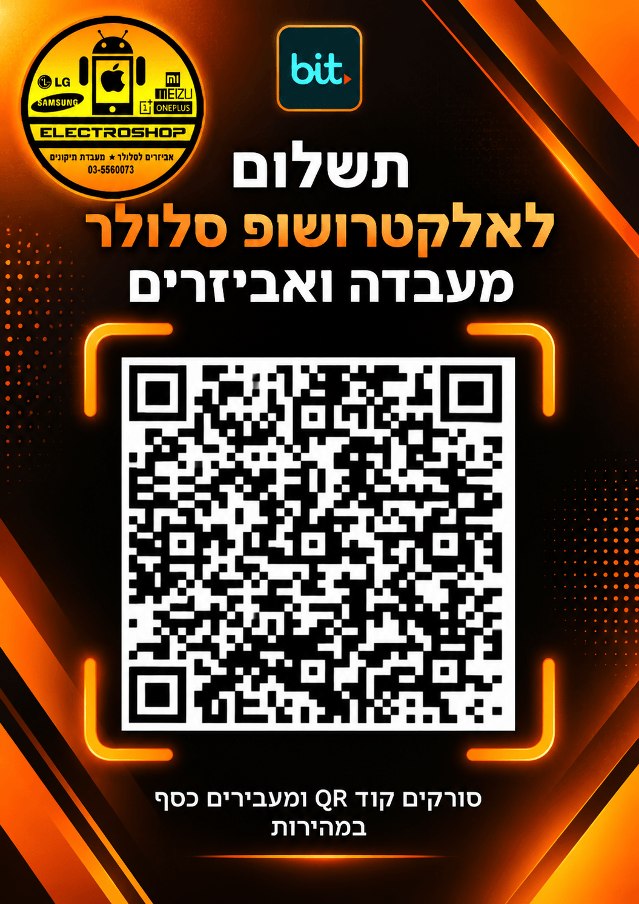

תשלום בביט לאלקטרושופ
סרקו בטלפון את הקוד והזינו את הסכום ומספר ההזמנה שהוצגו באתר.

התשלום יאושר לאחר בדיקת קבלת הכסף בחנות.
חזרה להזמנהסרקו בטלפון את הקוד והזינו את הסכום ומספר ההזמנה שהוצגו באתר.

התשלום יאושר לאחר בדיקת קבלת הכסף בחנות.
חזרה להזמנה